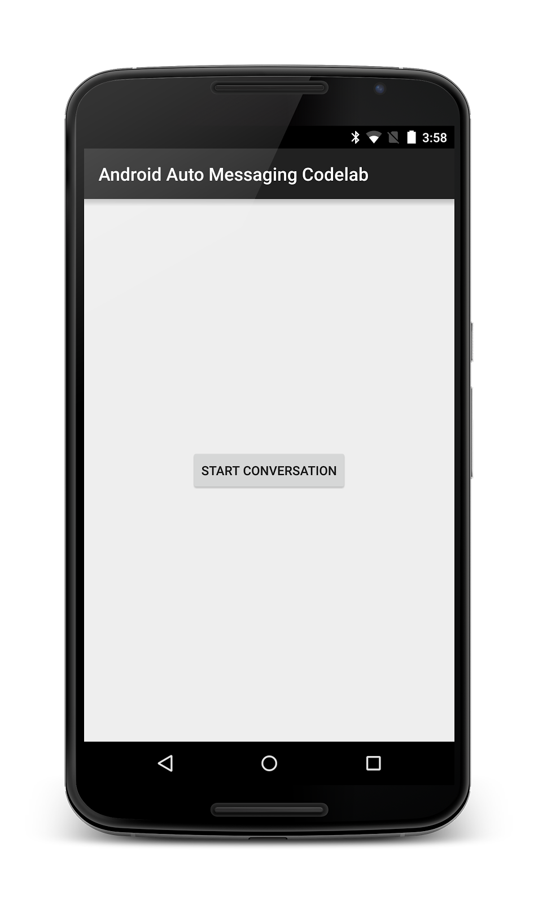
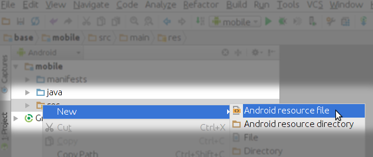
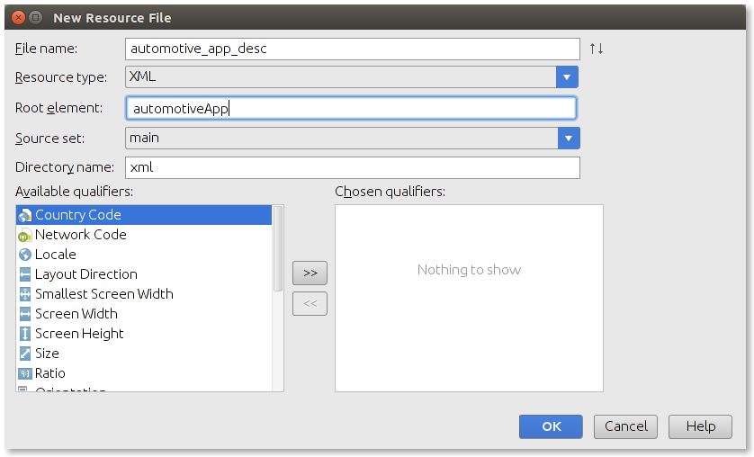
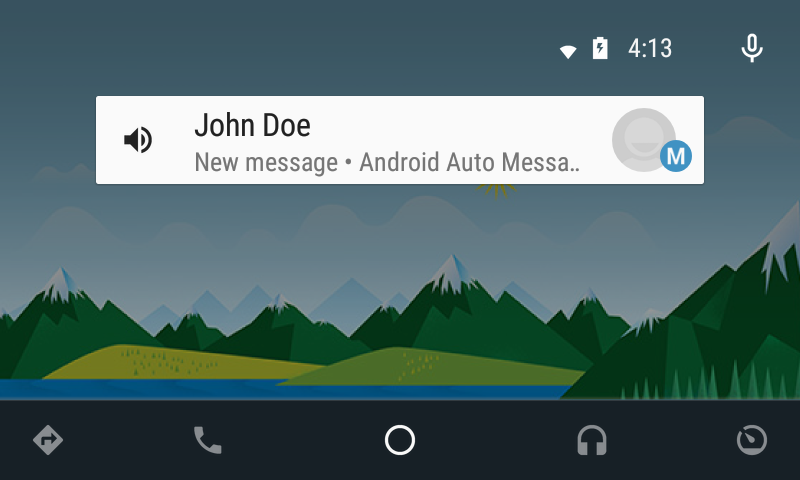
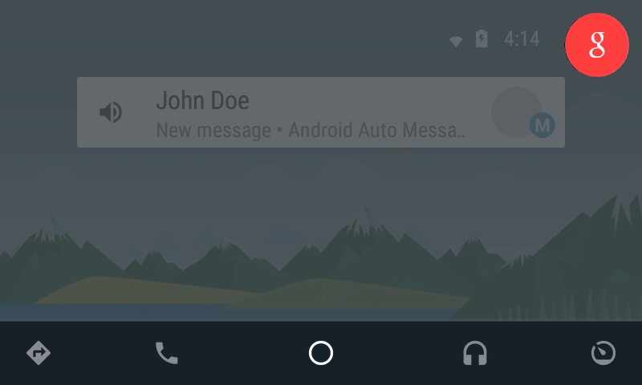

In this codelab, you will learn how to add Android Auto compatibility to a messaging app.
What you’ll learn
- Extend a notification so that it also shows on the car
- Handle the user reply
What you’ll need
- Android Studio version 1.0+
- The sample code
- A test device with Android Lollipop (5.0+)
- An Android Auto compatible head unit or the Android Auto Messaging Simulator
How would you rate your experience with building Android apps?
You can either download all the sample code to your computer...
...or clone the GitHub repository from the command line.
$ git clone https://github.com/googlesamples/io2015-codelabs.git
First, we will bootstrap with a very basic messaging app that simply creates a notification.
- Open Android Studo
- Select the

androidauto-messaging/basedirectory from the code folder (File > Import Project… >androidauto-messaging/base). - Enable USB debugging and plug in your Android device.
- Click the Android Studio
 Run button (or press shift+F10).
Run button (or press shift+F10). - After a few seconds, you should see the app similar to the screenshot below.
There is nothing much to play with except clicking on the button and seeing the notification after 15 seconds. For now, ignore the message about plugging your phone to Android Auto. If you plug your phone into the car (or run the simulator), you won't see the notification. That's because a notification needs to be extended in order to show up on the car's head unit. Let's learn how to do it in the next step.
Note: A typical messaging app would post a notification and let the user click on the notification and reply to the message. We instead kept the phone UI to the minimum, so you can focus on the Android Auto integration.

Frequently Asked Questions
As you've seen in the previous step, not all notifications will show on an Android Auto head unit. To be seen on Android Auto, a notification needs to be related to a messaging app and be augmented with a CarExtender from support library v4. First, to be recognized as a messaging app for Android Auto, we need to make an explicit declaration in our AndroidManifest.xml.
- Create a new file "res/xml/automotive_app_desc.xml":
Right click in the "res" folder and select File -> New -> Android Resource File

Then fill the dialog with the following info:
File name: automotive_app_desc
Resource type: XML
Root element: automotiveApp

- Replace the content of the file you just created with the following content. This declares that the application is using the Android Auto Messaging API.
automotive_app_desc.xml
- Edit AndroidManifest.xml and include the following meta-data inside the application tag:
AndroidManifest.xml
- Open MessagingService.java and add the necessary code to create an UnreadConversation object. Paste the following code in the method sendNotificationForConversation(..), within the delimiter comments. Read through the code now, which we'll explain in more depth later.
Before:
After:
- Open MessagingService.java. Locate the line where it creates the notification and extend it with a CarExtender:
Before:
After:
- Click the Android Studio Run button (or press shift+F10).
- The app looks the same, but now the notification created by it will show up on Android Auto. In the next step you will learn how to test it.
Takeaways
- To be seen on Android Auto, notifications need to be extended with a CarExtender
- Extended notifications also show on the phone regardless of whether Android Auto is connected or not, so you can support Android Auto seamlessly without needing to know when the user is connected to the car
- Android Auto only supports notifications from messaging apps. This is enforced by the Play Store review process
Run your application again and click the Start Conversation button. Unplug the phone from the computer and plug it into Android Auto.

You should see your notification. Click on the notification and then hit the blue mic image to reply. This is what you will see:

If you look closely at the source code, the UnreadConversation has a PendingIntent that handles replies. Whenever it gets a reply, it sends another message. You can keep having this very productive conversation for as long as you want :-)
The messaging API is intentionally simple and builds on top of the existing Android Notification API, requiring minimal effort from developers.
We hope you had fun conversations with John Doe and your other new friends!
What we've covered
- Extending a Notification with CarExtender
Next Steps
If you are interested in learning more about Android Auto, take a look at the codelab "Playing music on cars and wearables", which will teach you how to adapt a music player for Android Auto and Android Wear with the same codebase.
Also, take a look at our messaging sample. It is a more comprehensive version of this codelab.
- Watch this great devbyte video:
Devbytes: Android Auto Messaging - Take the Ubiquitous Computing Online course.